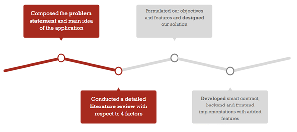
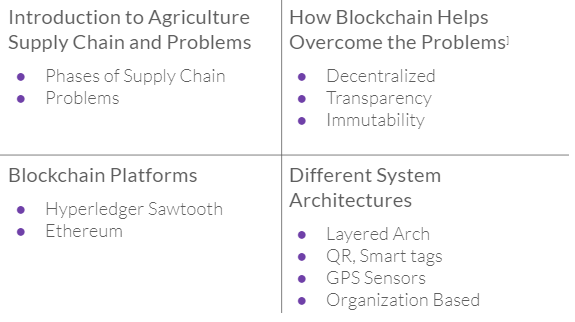
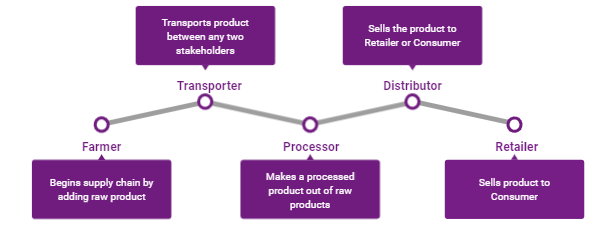
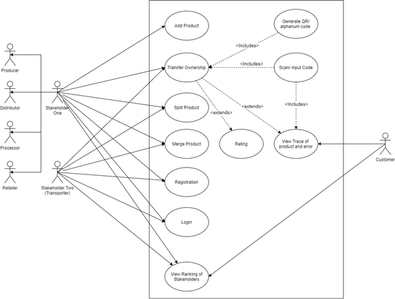
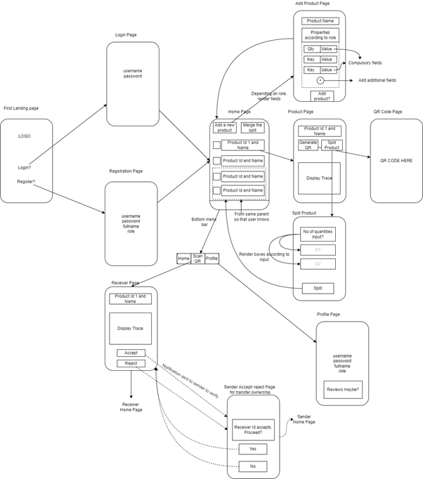
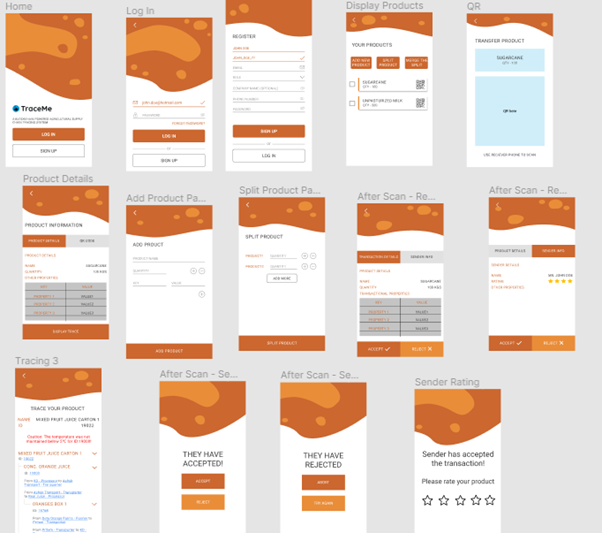
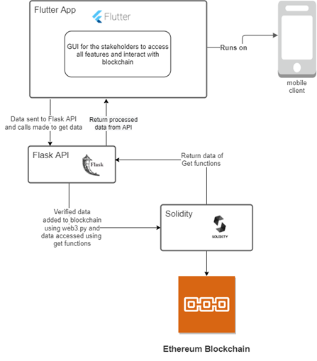

A blockchain-based mobile application for easier and secure food supply chain management
India is an agricultural country, being the second-largest producer in the world after China. It employs over 41.49% of the country and yet they don't see equitable profits. This is due to a corrupt, centralized, non-auditable system with the majority of the power resting with the middlemen.
The major phases of a food supply chain involve production, processing, transportation, distribution, retail, and consumption. There are various problems associated with this supply chain. In order to help solve these issues and proivde easier management, we propose a mobile application that utilizes a secure, blockchain-based system to ensure transparency and traceability of the food supply chain without the need for a central authority. Customers and authorities would additionally be entitled to view unmodified details like the owner, manufacturer and trace the entire product history they consume by scanning the QR code for the product.
The major phases of a food supply chain involve production, processing, transportation, distribution, retail, and consumption. There are various problems associated with this supply chain.
Based on the above problems, there is a need for a fully traceable and transparent supply chain to overcome food wastage, lack of profits, corruption, fraud prevention and provide complete traceability of a product and its history.
Our process of formulating the solution consisted of 4 stages
Before directly delving into the ideation of the solution to the problem, we first began with a very crucial stage of design and development - Properly Developing the Problem Statement.
Once we had identified the problem and chosen it for our project, during discussions, we realized that we had a lot of inconsistencies between us team members ourselves. Everyone seemed to have a different perspective of the problem and issues that we wanted to solve. We realized that properly defining the problem statement would help us all identify the goals of our project and outline the scope of our project. It helped us get on the same page which made the further stages easier.
 We conducted a detailed literature review by studying various research papers that proposed blockchain-based solutions for this problem in order to understand their approach and methodically formulate our solution. Since our project spanned multiple aspects, we consolidated our research according to four criterias.
Dividing the survey into these helped us with optimizing our approach in each aspect. Additionally, we also looked at various smart contract implementations and approaches on the web. Conducting such research helped us understand our problem better, come across new features and issues, and design an optimized solution.
These two phases were iterative throughout the year. We decided on the initial set of use cases and system design architecture and began development. But as we proceeded, we kept noticing new features and better handling of use cases which took us back and forth between the design and development phases.
We began the design by first defining the objectives and features of our system. Since it was iterative, these were added in different phases throughout the year.
We identified the different users of our application. For the food supply chain, the major stakeholders involved: Farmer, Transporter, Processor, Distributor, and Retailer. Additionally, Consumers were identified as major users for the app.
Based on these users, we mapped out the features for each.
Once the features and users were identified, it was time to design our application. Since transactions between stakeholders are likely to happen on-site, we decided that a mobile application would be an easy-to-use and handy method to implement this food supply chain management system.
We first roughly sketched out the flow of UI in order to target the above features for stakeholders.
Sketching the flow enhanced our understanding of the application flow and helped us formulate it better. Next, we made a design prototype consisting of the different UI screens on Figma. Check out all the pages of our app on Figma here.
Our application architecture was a 3 layered structure consisting of the mobile app, backend - server, and blockchain. The mobile app was developed in Flutter, with a backend server running in Flask that communicates to the Smart Contract in Solidity on Ethereum Blockchain using the web3.py module.

Blockchain-side - Smart Contract
The smart contract was the crux of our whole implementation and is where all the important data and logic were being stored. It consisted of 3 main structures participant structure storing user information, a product structure storing product information, and a Trace Structure storing the transaction of products between users information. Along with these, we had multiple mappings and functions that stored the relationship between the various structures and held the logic of our system.
Server-side implementation - Rest API
The server, written in Flask, consisted of GET and POST methods to interact with the blockchain and return data to the frontend. The flask backend communicated with the blockchain smart contract using the Web3 module. Web3 provided a connection object that takes the address of the deployed contract and an ABI (Abstract Blockchain Interface, a list of all methods in the smart contract).
Client-side implementation - Mobile application features
The mobile app, written in Flutter, consisted of a front-end for all our proposed features. Each of the pages had associated functionalities, which made HTTPS calls to our server-side methods.
This project was developed as a part of my final year BE project. We also published a research paper named “Trace Me - Application Using Blockchain for Traceability & Transparency in Food Supply Chain” (DOI: 10.2139/ssrn.3862323) on Elsevier’s SSRN Digital library and presented it at the 4th International Conference of Advances in Science and Technology. The project was very well received by the judges and they were happy to see that we young students were leveraging novel technologies like blockchain to build solutions.
To make it more robust and ready for the industry, several more modules for safety and reliability can be added. Verification of the stakeholders to make sure that only verified organizations can register to the application, some consensus mechanism or some way to check that the information added by the owner while adding a product is correct and true information and a module for auditing the product at every stage will help make the application more robust and safe. Additionally, the application can be customized according to specific policies and supply chain structures.